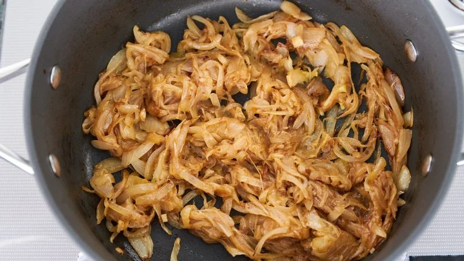
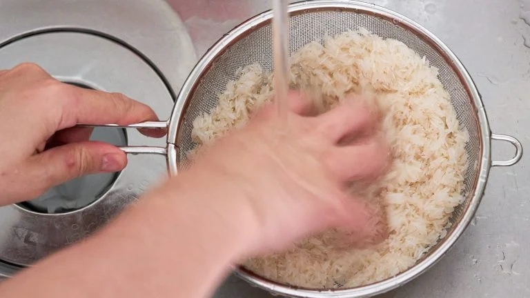
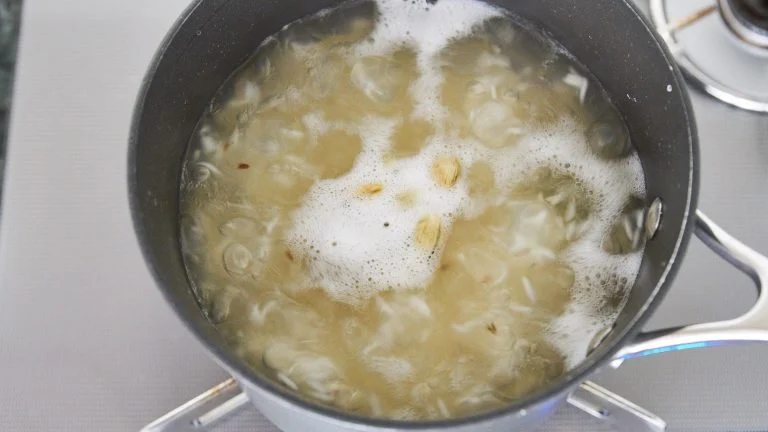
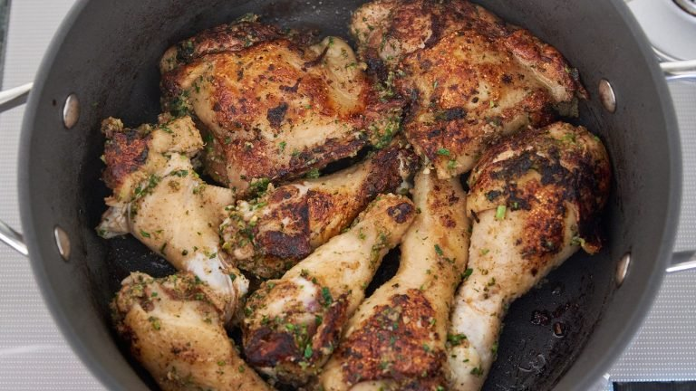
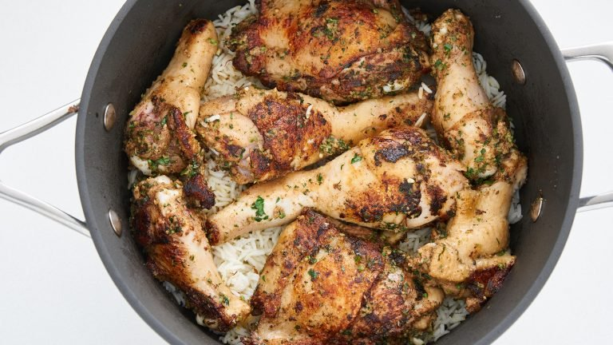
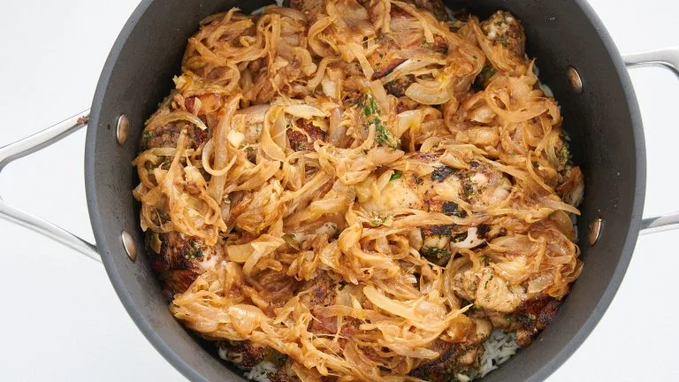
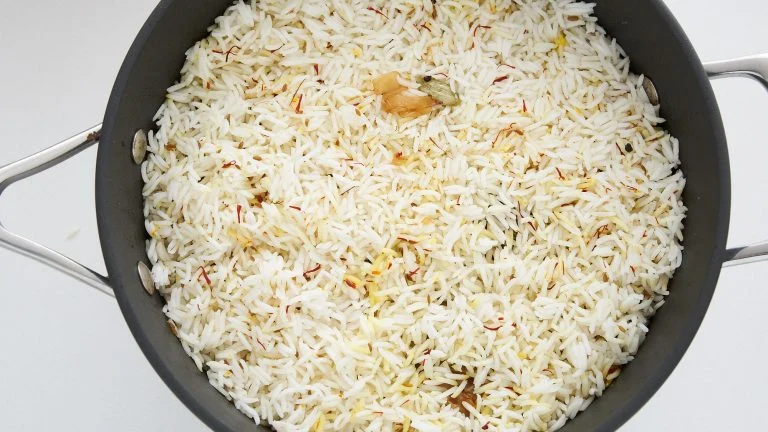
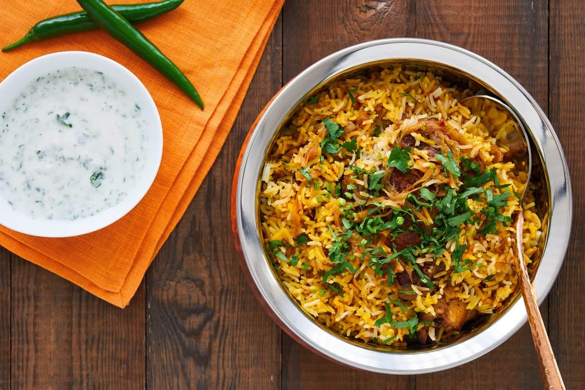
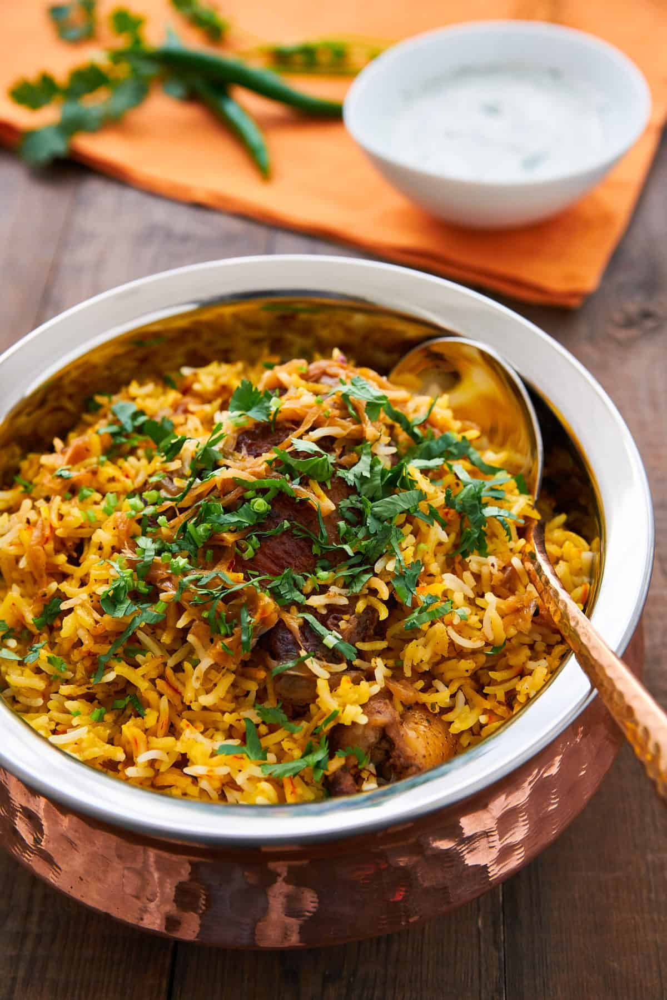

Chicken Biryani is a delicious savory rice dish that is loaded with spicy marinated chicken, caramelized onions, and flavorful saffron rice. For my Biryani, I simplify the order of operations, while retaining the traditional layered approach to assembling it.
To marinate the chicken for the biryani, combine the vegetable oil, garlic, ginger, chili peppers, mint, cilantro, garam masala, cinnamon and salt in a large bowl and stir together. Add the chicken pieces and toss together making sure the chicken is thoroughly coated in the marinade. Allow the chicken to marinate for at least 1 hour or up to overnight 🍲.
In a pot wide enough to hold the chicken in a single layer, add the ghee and onions and saute the onions until they are well caramelized (15-20 minutes). Transfer the caramelized onions to a bowl and set aside 🍲.
While the onions caramelize, prepare the rice by washing in a strainer under cold running water until the water runs clear 🥘.
To par-boil the rice, add the water, salt, cardamom, cumin and bay leaf to a pot and bring to a boil. Add the rice and boil for 7 minutes. Drain the rice, reserving 1 cup of the liquid 🥘.
In the pot you caramelized the onions in, add the chicken in a single layer, skin-side down. Fry until golden brown on one side (about 5 minutes). Flip the chicken over and fry the other side until golden brown. Transfer the chicken back to the bowl you marinated it in 🍗.
To assemble the biryani, add the saffron to the rice and toss to distribute evenly. Add half the rice mixture to the bottom of the pot you browned the chicken in 🍗.
Top the rice with the chicken in a single layer 🍗.
Top the chicken with an even layer of caramelized onions 🧅.
Finish putting together the Biryani by adding the rest of the rice in an even layer. Add 1 cup of reserved liquid from boiling the rice. Cover the pot with a lid and put the pot on the stove over medium heat and set the timer for 20 minutes. When you can see steam escaping from under the lid, turn down the heat to low and continue cooking until the timer goes off and then turn off the heat 🍛.
Without opening the lid, set the timer for another 10 minutes to steam the biryani. 🍛
Mix the Chicken Biryani together and then transfer to a serving platter. Garnish with fresh cilantro and serve. 🍛
 